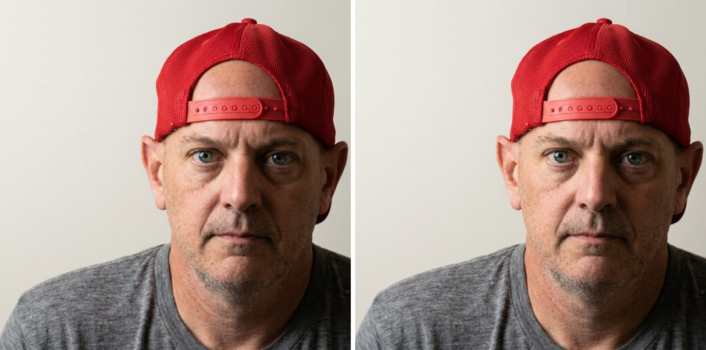

REFRACT
Photography Analysis & Enhancement

improved-photo.png
Multi-LLM Analysis
78.0/100
Consensus Score
Original Review
openai
78.0/100
This is a strong, sharp portrait with good exposure and a clean, minimal background. Most gains will come from tighter framing, slightly softer/cleaner skin rendering, and subtle eye enhancement while keeping the serious, straightforward mood.
- Crop slightly tighter from the left/top to reduce empty negative space and place the eyes closer to the upper third while keeping the cap fully in frame
- Balance facial tonality with local adjustments: lift shadows under the eyes and on the right side of the face (+10 to +20), and reduce midtone contrast/clarity on skin (-5 to -15) while keeping overall contrast
- Refine white balance and skin tones: cool WB slightly and/or reduce orange saturation in HSL (Oranges -5 to -15) while keeping reds controlled (Reds -5 to -10) so the cap doesn’t overpower
Combined Improvements Applied:
- Crop slightly tighter from the left/top to reduce empty negative space and place the eyes closer to the upper third while keeping the cap fully in frame
- Balance facial tonality with local adjustments: lift shadows under the eyes and on the right side of the face (+10 to +20), and reduce midtone contrast/clarity on skin (-5 to -15) while keeping overall contrast
- Refine white balance and skin tones: cool WB slightly and/or reduce orange saturation in HSL (Oranges -5 to -15) while keeping reds controlled (Reds -5 to -10) so the cap doesn’t overpower
- Enhance eye presence with a subtle radial mask: increase exposure/whites slightly (+5 to +10) and add mild sharpening/texture on irises; avoid over-whitening sclera
- Clean up background and minor distractions: remove faint marks/patchiness on the wall (healing/clone) and apply a light background luminance smoothing if needed
Before & After Comparison
Original
Enhanced
Side-by-Side
